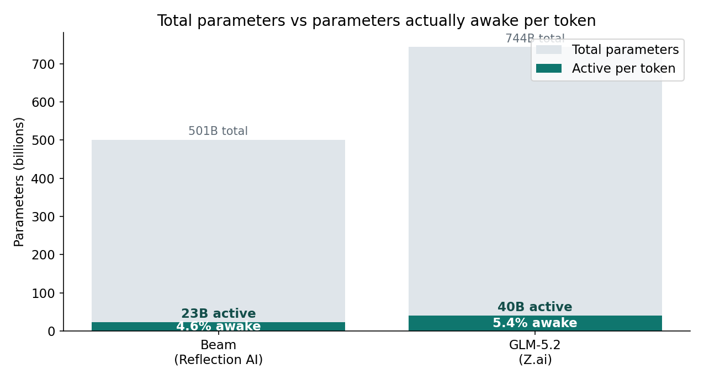
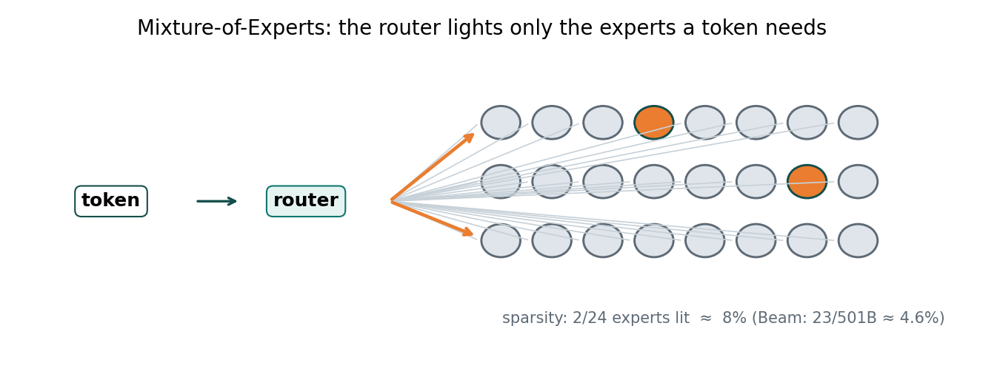
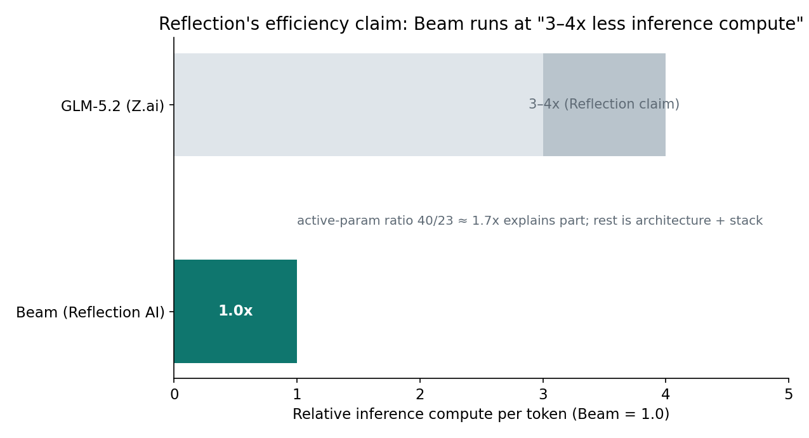
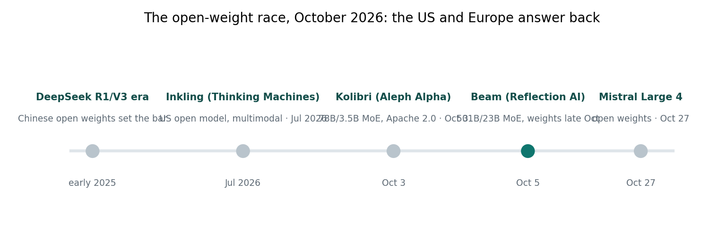

One-line: Reflection AI — a two-year-old Brooklyn startup with ~$4.7B raised and zero public models — just unveiled Beam: a 501B-parameter text-only MoE that wakes 23B per token, claims parity with Z.ai's GLM-5.2 at 3–4x less inference compute, and ships Apache 2.0 weights this month.
On October 5, Reflection AI put its first public model on the table. The Brooklyn startup — founded 2024 by two former Google DeepMind researchers, backed by Nvidia, Sequoia, and Lightspeed at a $25B pre-money valuation — had never released a model before. Beam is its proof of work.
The numbers: 501 billion total parameters, 23 billion active per token — 4.6%. Pretrained on 23.8 trillion tokens. A 1-million-token context window. Trained, per the announcement, with high-compute reinforcement learning aimed at reasoning, coding, and agentic tasks. The pitch is blunt: match the best Chinese open models on reasoning benchmarks — Z.ai's GLM-5.2 (744B total, 40B active) is the named target — while costing "a fraction of the token cost and inference time compute." Full weights, a technical report, and a model card land under Apache 2.0 later this month, distributed through hyperscalers and neoclouds.

501B total, 23B active (4.6%) vs GLM-5.2's 744B total, 40B active (5.4%). Per-token compute tracks the colored bar, not the gray one.
ELI5: the warehouse with one lit aisle
Picture a warehouse the size of a city block. 501 billion things are stored in it. But every order is filled by lighting up a single aisle — 23 billion things' worth — and everything else stays dark.
That's Mixture-of-Experts: the model stores 501B parameters of knowledge, but each token only pays the compute bill for 23B. A dense 501B model would burn ~1,002 GFLOPs per token; Beam burns ~46 — a 21.8x reduction before any other optimization. The notebook attached to this post runs that arithmetic plus a toy router you can play with.
The catch is the warehouse itself. All 501B parameters are stored whether they fire or not — roughly 501 GB in FP8 — and at a 1M-token context the KV cache gets heavy (our notebook estimates ~340 GB under stated illustrative assumptions). Beam computes like a 23B model but parks like a 501B one. This is why "open weights" ≠ "runs on your machine."
How it works: sparsity + high-compute RL
1. The router: 23 of 501, every token, every layer
Every token passes through the layers. In each MoE layer, a learned router scores all the experts and forwards the token to a small top-k subset. The router learns which knowledge the token needs; the experts hold the knowledge. We covered the mechanism in our Sep 26 MoE post — same machinery, new scale point.

Top-k routing: 2 of 24 experts lit in the toy diagram. Beam's sparsity is 23/501B ≈ 4.6%.
2. High-compute reinforcement learning
The most interesting line in the announcement isn't a parameter count — it's the training recipe. "High-compute RL" means the RL post-training phase that teaches reasoning, coding, and agentic behavior consumed serious compute, not a token fine-tune on the side. This is the same lesson the reasoning-model era taught: supervised pretraining gets you fluent, RL at scale gets you reliable. Reflection is betting the open-weight race is now decided in post-training compute, not pretraining scale.
3. Pretraining scale: 23.8T tokens
23.8 trillion tokens is ~48 tokens per total parameter — in the ballpark of the compute-optimal pretraining ratios the industry converged on. It's the densest knowledge-loading phase an open model has had, and it's what lets the router have 501B worth of specialists to choose from.
4. The 1M-token context and its tax
A million-token window is table stakes for frontier models now, but remember the warehouse math: context is memory, and memory is the scarce resource in MoE serving. The 1M window is a headline; the real number that matters is what you can serve at that window without a datacenter.
SOTA: where Beam sits on the leaderboard
| Model | Total / active params | Context | Status |
|---|---|---|---|
| Beam (Reflection AI) | 501B / 23B | 1M | announced Oct 5; weights late Oct, Apache 2.0 |
| GLM-5.2 (Z.ai) | 744B / 40B | — | Beam's named benchmark target |
| Inkling (Thinking Machines) | — | — | multimodal; Beam outscores it on 4 coding tests (company-reported) |
| Kolibri (Aleph Alpha) | 78B / 3.5B | 1M | Apache 2.0, live since Oct 3 (see our Oct 5 post) |
| Mistral Large 4 | — | — | announced today, open weights Oct 27 |

Reflection claims "3–4x less inference compute." Active-param arithmetic (40/23 ≈ 1.7x) explains part; the rest has to come from architecture and the serving stack — and the claim is still self-reported.
Three things to keep straight:
The numbers are company-reported. TechCrunch notes the performance claims haven't been independently verified. Beam reportedly scores on par with GLM-5.2 on advanced reasoning and beats Inkling on four coding tests — but the weights aren't out yet, so LMArena and Artificial Analysis can't confirm. Moonshot's Kimi K3 reportedly still beats Beam on pure capability. Treat the leaderboard as provisional until independent scores land.
The efficiency thesis is the real story. "3–4x less inference compute" is a cost claim, not a capability claim. If it holds, Beam becomes the workhorse for enterprises that want open weights without Chinese-lab dependencies — and Reflection's pitch to "AI factories" (institutions training the model on their own proprietary data, with sovereign-AI partnerships already being tested with Shinsegae Group in South Korea) only makes sense if per-token economics beat the alternatives. Hedge funds and trading firms are reportedly first in line — the verticals where inference cost is the whole game.
The compute moat is visible. Reflection signed $7B+ in deals with SpaceX and Nebius for Nvidia GB300 access through 2029. That's the infrastructure behind "high-compute RL." The open-weight race has become a compute-procurement race.

Chinese labs set the bar; July brought Inkling, October brings Kolibri, Beam, and Mistral Large 4. The US and Europe are answering back — on efficiency, not raw scale.
Takeaways
- Active params, not total, set the inference bill. 501B stored / 23B awake = 46 GFLOPs per token — dense-equivalent would cost 21.8x more compute.
- Storage still charges by the total. ~501 GB FP8 weights plus a heavy KV cache at 1M context: open weights ≠ cheap to run.
- The race moved to post-training. "High-compute RL" is Reflection's real bet — reasoning and agentic reliability are trained, not pretrained.
- Efficiency is the Western moat. Beam doesn't claim to top the leaderboard; it claims to match GLM-5.2 at 3–4x less inference compute. If independent benchmarks confirm it, the open-weight conversation shifts from "who's biggest" to "who's cheapest per useful token."
- Verify in late October. Weights, technical report, and model card ship this month under Apache 2.0 — that's when the claims become testable. Until then: provisional.
Sources: Reflection AI announcement and TechCrunch (Oct 5, 2026); GLM-5.2 figures via TechCrunch; Inkling (Thinking Machines Lab, July 2026); Kimi K3 comparison via aidailypost; Kolibri figures from our Oct 5 post; Mistral Large 4 via Reuters (Oct 6, 2026).